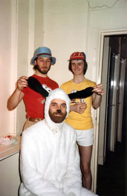

Chapter 18. You're A Good Man. Charlie Brown!...again
1981 dawned and the first thing that happened was that we met to see what we would enter for this year's Royal Exchange Amateur festival. Chris and I had also in the past year or so been writing our next musical 'Marilyn', which was now done and we had completed a demo recording using members of the cast accompanied by myself just on piano.
 We duly presented it to the cast for submission and, after initial doubts from various sources, we played them all the tape and everyone generally thought it worth doing at the festival... but it didn't happen. Normally the festival fell mid July so Chris, Amanda and Andrew being teachers with long holidays, had booked a tour of the continent for all of August. Unfortunately the festival was moved back to August of that year. As the lack of our writer/director was too much of a loss to bear, someone suggested redoing the Charlie Brown musical which would be very uncomplicated, but a lot of fun. It was also be somewhat of a change in direction for us all at the actual amateur festival after the seriousness of many of our other presentations there. Even better it meant that Chris could direct up to the final fortnight, and then we would have to finish it off without him, which was manageable. So we entered it for the festival, and this time got the plum spot, the last night, on Saturday, August 8th 1981.
The weeks in rehearsal went well, and this time Arthur was going to use his new toy, a video camera to record the event from the stage. As the video proves, everyone had a thumping good time and it went really well, with the audience loving every second of its rather warped humour. To date the production, this was recorded on a Betamax which I still have a copy and intend transferring it to a more modern medium when I find the necessary hardware.
In the show I played the piano and was backed by members of the Bowden Sinfonietta, led by Colin Touchin. The cast for the night were: Bill Johnson as Charlie Brown, Norman Partington as Linus, Louis Grant as Schroeder, Alison Davis as Lucy, Shirley Hawley as Sally, Cathy Rullow as Patty, Jaqui Johnson as Marcie, Ged Sammon as Pigpen, and Chris Hawley as a 6 ft 7inch Snoopy, replete with head-to-toe costume!
We ended up with luke-warm reviews (which was slightly disappointing), but we were the only show to sell out for the whole festival, so we couldn't have been doing much wrong!